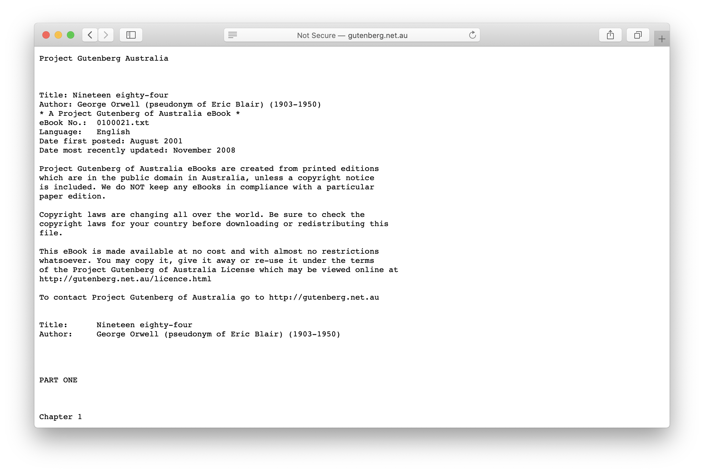

In their most basic form, plain-text, webpages are Scrolls without physicality. Like them, information is displayed in a continuous flow. One critical difference, however, is its ability to show dynamic and updating information, like Websites and Feeds.
| Length | Variable |
| Experience | Linear, Continuous |
| Realm | Physical, Digital |
| Example |
1984, Gutenberg Edition

|
May the source be with you
by Michael Hart Project Gutenberg
What I mean by this [in reference to the title] is that the idea of Project Gutenberg is to bring the source of all information, and civilization, to the masses in the same way The Gutenberg Press did in the middle of The Second Millennium, only in a modern manner.
As our civilization starts off into The Third Millennium the average person should be able to get to online computers for the purpose of acquiring knowledge from a million books by a time when The Third Millennium is only 1% on its way, and by the time 2% is completed should have access to 10 million of these books in translation into 100 languages or more.
These predictions have been part of my goals for the Project Gutenberg Literary Archive since its inception, but only now is there any likelihood that persons will seriously consider such predictions. . .they were just too much in the past.
However, with the advent of 1/2 terabyte drives for $200 and the consequent ability to add a terabyte to your computer on a budget, the possibilities of such Project Gutenberg goals, and more, are becoming so much the stuff of reality that the naysayers have little to count on, other than being labeled, "The nattering nabobs of negativity," to cash in a phrase of some previous political significance.
Today there is no reason the average person can't have whole libraries of books residing inside their own person computer as their own person library, only a library much larger than the average public library, which carries ~30,000 books--but also contains many other things than books. There isn't any reason these personal libraries cannot contain artworks by a thousand artists or sculptors, music by a thousand composers and a wide variety of others.
You are nearly all familiar with iPods, but most of us would not realize that an iPod could easily contain more music for our potential listening than most of us have time for. It's nothing for millions of people to log over 10,000 items into their iPods. . .listening to one each 60 minutes, 24 hours a day, 7 days a week, 365 day a year would still not quite let you each of the items one time.
10,000/365 = 27.4
Most of us also don't realize, even though programs to let a person read eBook on iPods were available when iPods were on the market only a week, that you could just as easily put an electronic library of eBooks on you iPod as a music library. In fact, there is no reason you can't mix the two, and, with the new video iPods, also include the above art library.
But I don't want these people to just have such materials as an audience, I want them to have them as a source of the new materials of the future.
I want anyone who wants to make a new edition of any classic book to find that 99% of what they need to create such a new edition is right there for the taking and that all they have to do is the "real" work. . .right between the ears, and the heart. . .let's not forget the heart.
Our educational system is rampant with "Trivial Pursuit" and the like, as opposed to real thought provoking events.
In fact, "thought provoking" is likely to become one of such words as have become "politically incorrect," and we will be teaching the next generations of students never to say words that could be construed as "thought provoking."
What possible good could come from provoking thought?
What I would like to do is to free our people from the waste of the "Trivial Pursuit" aspects of education, just as freed they were from the multiplications tables, that turned minds into memory banks of totals and sub-totals, instead of minds that were actual calculators that could figure out problems, rather than recite their solutions from memory. Look up the words "computer" and "calculator" in the OED or many classic dictionaries for definitions of people who can work numbers, though I should warn you that the more modern definitions in use tilt a bias more towards the MBA mentality, which is not the same thing at all.
I remember teachers and professors of the ilk who, when they were asked a question such as, "When Hamlet talks about `the slings and arrows of outrageous fortune,' is it the kinds of slings used back in the day of David and Goliath?" and would grab their huge weighty tome of Shakespeare's collected work and casually flip through the pages until Hamlet's soliloquy was in front of them, and then, after quoting a few lines be suggesting a possible "research paper" for the student, when they should have been answering a simple "yes or no" query.
The truth is the most teachers probably never considered the question of whether Hamlet meant something like the sling of David as mentioned in the Bible, and thus should not be able to give a decent answer. . .thus some hiding behind "Trivial Pursuit" of the quotation which proves they know Shakespeare . . .but doesn't prove they ever provoked any thoughts about what what Shakespeare was actually saying.
What I want is for the students to be able to whip out their PDAs, PPCs, iPods, or whatever, and beat those professors to the quotations, thus keeping the conversation on track of an answer to a simple question, rather than let some professors take them off on a wild goose chase, all the long way around Robin Hood's barn.
;-)
When I say, "May The Source Be With You," I mean that I want to give that source material to everyone, thus freeing them, I hope, from the drudgery of the "Trivial Pursuit" aspect of the old-fashioned educational system, to be able to ask such questions of their professors without such professors having the possibility of palming off such questions as above.
The same goes for the "treasure hunts" through libraries and other sources, a la Professor Kingsfield, in a movie called, "The Paper Chase," in which the students are chasing papers, in more ways than one, as you will find out if you look.
*
While on the subject of movies, I would like to recommend an Ealing Alec Guiness classic, "The Man in the White Suit," as my favorite movie of all time for the left brain, and than a right brain classic from the same period, "The Red Shoes."
"The Red Shoes" is/was also available in the great paperback written by the same two who made the movie.
I suppose I should also add the 1954 version "20,000 Leagues Under the Sea."
As far as books go, "Dandelion Wine," by Ray Bradbury is the right brain favorite, with "Atlas Shrugged," by Ayn Rand for the left brain. "Atlas Shrugged" is 1,000 pages which might be too much for most people to start with, so you might want to start with "Anthem," which is a Project Gutenberg eBook.
If you are totally serious about reading Rand, you might see yourself clear to reading "The Fountainhead" before "Atlas," as you will probably get more out of both that way, but I am inclined to warn you that the first 120 pages go slowly.
*
The upshot of this commentary is that Project Gutenberg goal orientation is not so much to bring finished product to some billions of people, but rather to bring the source materials with which they can build new products, including themselves via the opportunity to pull themselves up by the bootstraps, without dependence on any particular institutions, libraries or schools, but with direct access and control.
*Should I leave this next part out???!!!
It is not that I want to eliminate libraries and/or schools, I love them more than you might imagine, but I value what is the substantive materials out of which libraries and schools are built even more than libraries and schools themselves.
I also value the words in the books more than the books as a material object. . .I find it difficult to understand voices that tell me how much fondness they have for the look and/or feel of paper books. . .I feel they have somehow caught this secondary fondness for the "form" rather than the "content." For me it is all about the content. . .I literally could not tell you what the pages of the books I read look like unless I was studying them for class, because then I remember where the words were on the pages so I can find them again. . .but rather I see past the words to a vision, a literal vision of the story behind the words. For this reason I cannot listen to audio books while driving, it would be too dangerous.
But what I value most is the hearts and minds of the authors who have spent major portions of their lives to tell me what was inside them, to tell me of their own perceptions and the thoughts and feelings that reside in them.
Books are one of the ultimate forms of communication for us, and we can receive the thoughts of people who lived hundreds or thousands of years and miles away, very much like Colonel Freeleigh as a time machine in "Dandelion Wine."
If the only effect of my career is that the literacy rate is improved by 10%, that people read 10% more, are educated 10% better, and all that comes with that, I will say that I have been a success, but I have hopes for much more than that.
I hope that eBooks create the same kind of change as did The Gutenberg Press, providing us with a Neo-Rennaissance, and a Neo-Industrial Revolution, something for the right brain and something for the left brain of the world at large.
I hope that you, personally, find at least one more door you can open via eBooks that you might not have opened otherwise to a place you will call home.
My Best Wishes To You All!
Michael S. Hart Founder Project Gutenberg